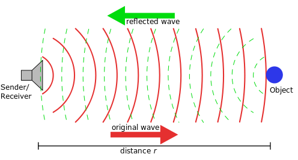

Sound navigation and ranging (Sonar) Sensors
Evolution in nature is influencing technology at large, it is no surprise then that field crickets have been an influence on localising technology that could be used in autonomous vehicles. After all, sound is one of the primary tools used by the emergency services to clear way on the road for them to pass and to keep nearby drivers safe.
Based on the reflection of sound waves we are able to calculate an estimate of the distance to objects and over time their speed and direction. Ultrasonic is used on above ground on vehicles as due to their high frequency they're not able to be heard by humans or animals and have a range of about 8 metres.
Tesla's model S sedan uses ultrasonic detection, which they have managed to hide within the body of their vehicle in order to use SONAR technology without having the sensors mounted on the vehicle.
Radio detection and ranging (Radar) Sensors
Radar is identical to sonar in all ways except radio waves are used instead, which have a much larger range and can be altered to vary between accuracy at higher frequencies or range at lower ones.
Light detection and ranging (Lidar) Sensors
Light detection and ranging sensors are used in most autonomous packages in vehicles, they can use lasers to detect the distance to objects in a radial field around the sensor. This highly accurate system can be combined with reconstructive algorithms to produce 3 dimensional scenes of an environment.
One large drawback of these systems is the amount of resources required for them to run accurately in real time, resource usage can be reduced at the cost of accuracy which can impact safety and usability.

References
- McKinsey & Company
- Bicho, Mallet, and Schoner / Target Representation on an Autonomous Vehicle (May 2000)
- Self-localization of autonomous underwater vehicles with accurate sound travel time solutions
- Tesla UK
- US Patent US20170059697A1
- R. H. Rasshofer and K. Gresser / Automotive Radar and Lidar Systems for Next Generation Driver Assistance Functions (2005)
- Thorsten Luettel, Michael Himmelsbach, and Hans-Joachim Wuensche / Autonomous Ground Vehicles Concepts and a Path to the Future